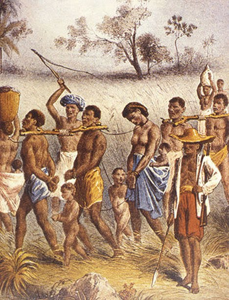
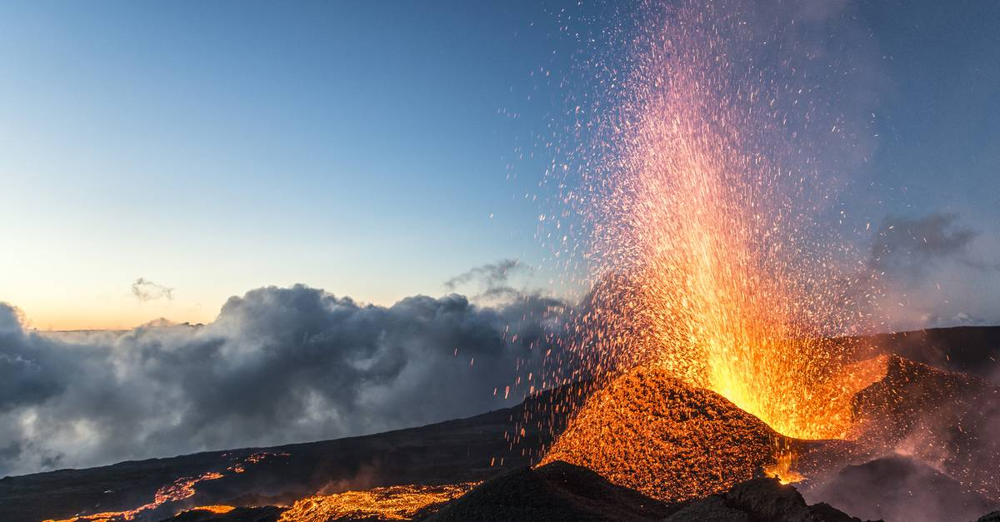

Petit Paradis
Notre algorithme vous a conseillé le Pack Petit Paradis?
Parfait, préparez vous à vivre un moment chaleureux et plein de divertissement sous les palmiers de nos destinations. Les pieds au bord de l'eau ou la tête dans les nuages, notre algorithme ne se trompe jamais. Découvrez l'une de nos destinations grâce à cette page et projetez vous dans vos vacances dès maintenant!
La réunion
Découvrez des îles somptueuses et passez du bon temps avec notre sélection de voyage comprennant notamment La Réunion
Découvrez les joies du soleil et une culture incroyable. Passez d'agréables moments au large des côtes ou vivez des expériences êxtremes en survolant l'ile en parapente.
Un passé passionnant
Au 17e siècle, l'île Bourbon à été colonisé par les colons francais, puis elle devint l'ile de la Réunion en 1793. Cette île volcanique née il y a 3 millions d'années est une perle de l'Océan Indien et compte un nombre d'activité surprenant.
Le volcan
L'ile repose sur deux volcans né il y a des milliers d'années. Le piton des neiges, volcan qui s'est éffondré sur lui même pour créer les trois cirques: Cilaos,Mafate et Salazie. L'autre volcan nommé le piton de la fournaise est l'un des volcans les plus actifs du monde.